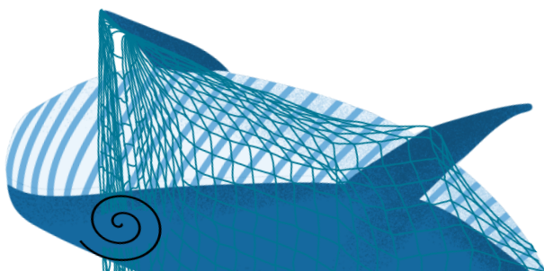
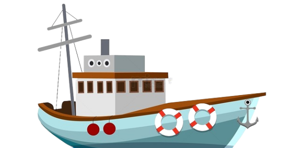
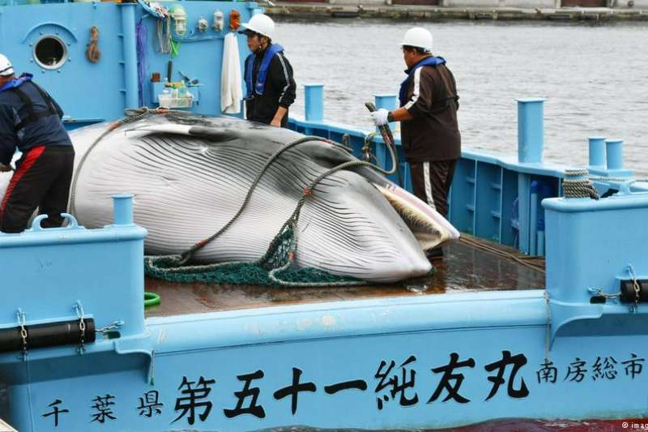
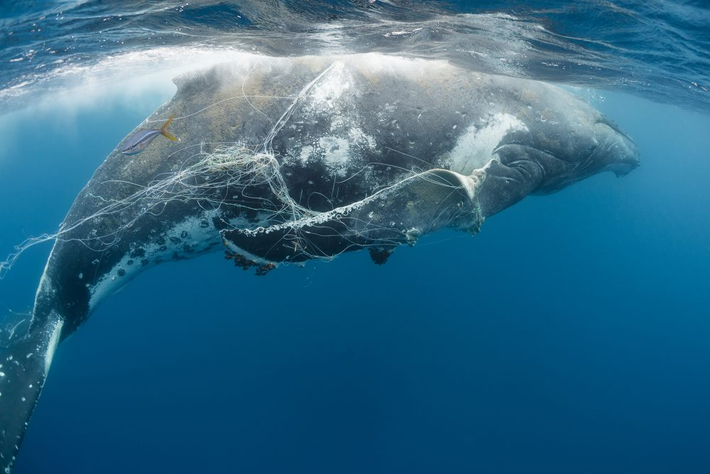
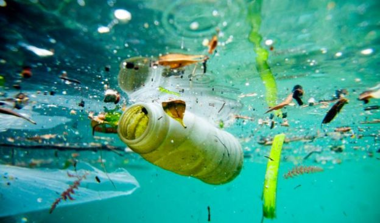
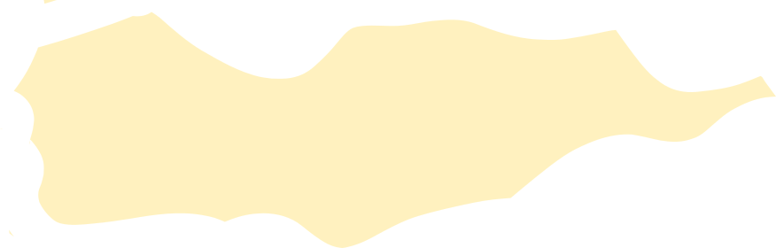
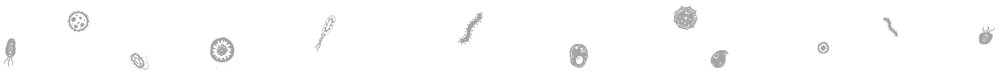

海洋中的鯨豚因人類的活動族群正快速的減少，有資料指出20世紀全球就有近300萬隻大型鯨被捕殺，
與依靠人力捕鯨的世紀相比高出數十倍之多，人類製造的垃圾、遺棄的漁網也威脅著他們的生存，
而今仍有多種鯨類在國際自然保護聯盟紅皮書中被列為極危、瀕危和易危物種。
商業捕鯨

在19世紀時，鯨魚偶爾會被不具甲板船隻所獵殺。不過19世紀後半，捕鯨業引進蒸氣動力的船隻，
和魚叉的出現也對鯨魚造成衝擊，因為它可以讓捕鯨業者能夠獵殺及固定被捕的鯨魚。當其他鯨魚
被濫捕過度後，捕鯨業將數量仍然豐富的長鬚鯨視為替代目標。獵殺長鬚鯨的目的主要是為了鯨脂、
鯨油與鯨鬚。
混獲與漁網

北大西洋露脊鯨，被IUCN紅皮書列為極危的物種生活在美加東部的
大洋中，活動範圍和漁民捕撈龍蝦的海域重疊。據統計，有超過八成的北大西洋露脊鯨一生中至少被漁
網纏住過一次，甚至有個體有被纏住8次的紀錄！魚網纏繞會造成鯨魚消耗許多寶貴的能量，也降低進食
和遷徙的能力，每年有超過30萬隻鯨豚因誤纏漁網漁具而死亡！
汙染

致力減少塑膠污染的非營利組織「五大環流研究所」於 2023 年 3 月 8 日發表的最新調查指出，
海洋裡的塑膠垃圾恐將在 2040 年前增加為目前的近 3 倍，各國必須盡快立法減低塑膠污染對海
洋的侵害。報告發現，估計共有 171 兆顆、總重達 230 萬公噸的塑膠微粒漂浮在全世界的海洋中。
1
鯨魚下潛深海覓食，抹香鯨等可淺至1000-2000公尺。
3
在海水表層鯨魚排放大量糞便，鯨豚的排遺富含促進各類浮游生物所需的養分與物質。
2
鯨豚必需回到海面呼吸，由下往上的運動把海底養分帶到海面這就是鯨魚幫浦。
4
經光合作用浮游植物和藻類能捕捉人為排放至大氣中，這和陸地上的生態系所吸收的差不多。
5
這些在海中漂浮的小生物製造了地球70%的氧氣。
6
鯨魚幫浦創造了生生不息的海洋環境，鯨魚便便中的養分是維持海洋生態與魚群健康的重要關鍵。




為何要保護鯨魚?
我們能做什麼?